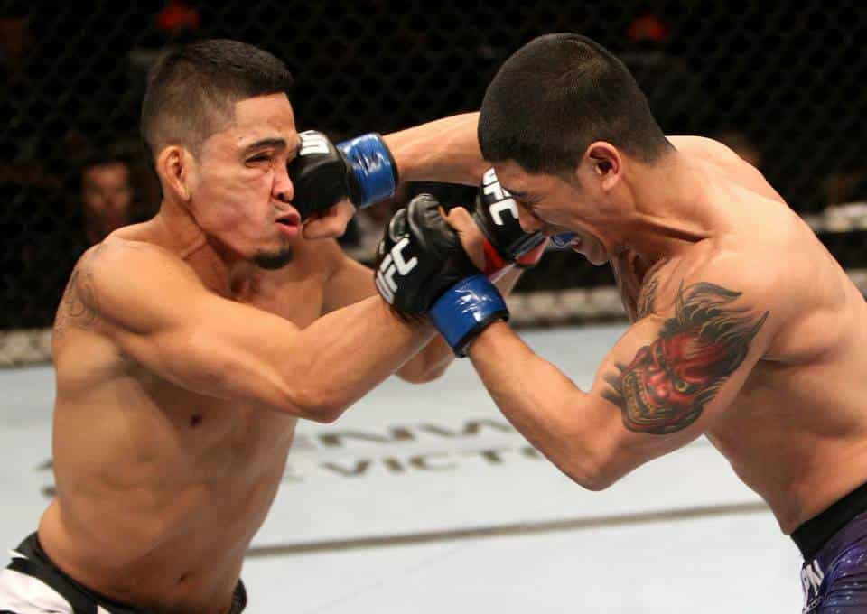

< < < Back
4 Effective Fighting Techniques That Every Man Should Know – Return Of Kings
You cannot say that you are a man if you cannot fight. As simple as that. If you fight better, you incidentally become a better man. People would say that nowadays, in the era of cameras, guns, safe spaces, and “muh feelings,” hand-to-hand to combat is obsolete. I could not disagree more.
Fighting is needed in this day and age more than ever before. By being exposed to this real violence, you become slowly impervious to it. You can distance yourself from it, think in a clearer manner and act accordingly. You learn that you are not fragile and that when someone strikes you, you strike right back.
I have fought most of my life, learned different arts and used many techniques. But nothing is as efficient as perfectly mastered, simple techniques. Today, I will share with you what I consider the most useful tools in the box.
The hand techniques
We will focus here on the upper limbs, in a situation of unarmed combat. I have a limited experience in the “soft” arts such as Tai Chi and Qui Gong so this series uses techniques coming from the “hard” arts.
Disclaimer : These are suggestions to add to your training sessions. You must practice regularly and under the supervision of a qualified teacher.
No “Cannon Fist Style” in today’s article
1. The lead hand pull and back hand strike
I find this technique more effective against an opponent using a southpaw stance. The important element is surprise.
1.Starting from both the opponents having their guard up. Use the power of your lead hand to bring the opponent towards you, knocking him off balance. You can grab his lead wrist, the back of his fist or his sleeve if he has any.

2.Simultaneously, your back hand comes closer to strike with a cross or a hook. The force of impact is multiplied as you are not hitting a motionless target, but one that meets your fist by moving straight in its direction.
3. You must act fast as you also have your lead hand occupied. The movement can be completed by pulling the opponent’s hand downwards or by side-stepping to his “weak” side (towards his back and shoulders) and take advantage of this position.
2. The palm heel strike
Sensei Demura demonstrates the palm heel strike, while pulling on his opponent’s belt in order to maximize the strength of impact.
This move is effective and simple to use, but it is usually proscribed in a competitive environment as it can damage the bones of the face easily or cause severe damage. It reduces your risks of knuckle and wrist injuries compared to a regular closed-fist punch, when the articulations are cold for instance.
1. Where the fist is like a stone traveling in the air, the palm heel strike uses the supports of the radius and cubit (ulna) bone.
It would feel more like a spear or the end of a stick that uses a thrusting strike.
2. The technique is usually a counter-attack movement used after entering the guard of the opponent, by blocking or deflecting his blow. The targets are usually the chin (see image), the nose or the throat when the strike is performed in a straigh line. When you use the palm heel as a hook, aim at the temple, the chin or the neck.
3. The ear slap from waist level
NOTE: This is a self defense move. This strike usually results in the perforation of the ear drum.
Perforated ear drum caused by an ear slap
An alternative is to hit the zone of the chin and jaw.

1. As it is a self-defense situation, the key is to use suprise. You have to strike before the opponent has the time to raise his fists. When confronted, open the palms next to your waist, asking “What did I do?” to distract your target.

2. Turn your whole body as you strike. Strength is not the main element. Speed and precision are, as the palm must land flat on the ear, perforating the ear drum with the sudden pressure. The arm must not be locked extended to avoid elbow injury and allow greater speed.
3. If you do not want to perforate any ear drums, the alternative is to use all the weight of the body and strike the jaw of the opponent with the radius bone.
A powerful slap is sometimes sufficient to knock out or disorientate someone caught off guard.
4. The upward elbow block and elbow strike
This move has been popularized by the introduction of Muay Thai to Westerners. It can be executed in one or two steps, depending of the distance that separates you from the opponent
1. Having your fists raised, pass your palm on your head as if you were using an invisible comb. This should be done while moving one step forward, to parry an incoming hook or to strike directly the chin of your opponent if you get close enough.
2. The aim of the move is to hit the chin or the nose of the opponent from under. The big inconvenience of this move is that it leaves the ribcage exposed while it is performed.
If you missed, you can follow up by using a close range horizontal elbow strike. You should turn your entire body, starting from the back foot, to use maximum power.
Au travail!
Now it is time to bring those ideas to the dojo and learn them. They should be practiced once a week. There is no “minimum length” or “end” of practice. I am not telling you how to take antibiotics.
The human body comes with lower limbs even more powerful than the upper ones! Stay tuned for Part II where I will share with you the right techniques to kick your way to victory.
Read More: 13 Martial Artists You Can Draw Inspiration From